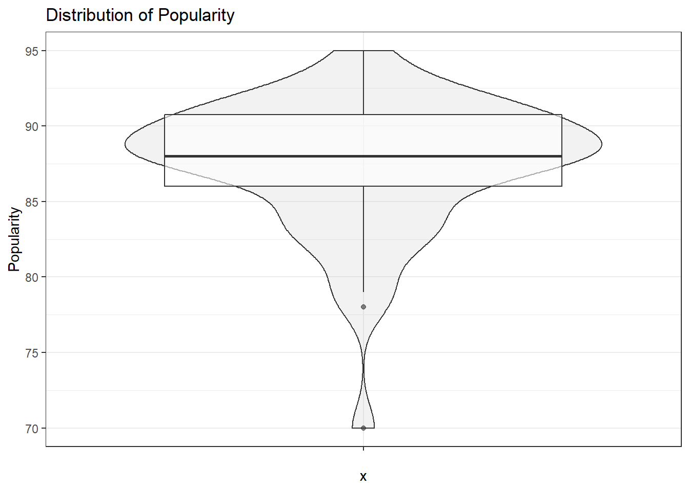
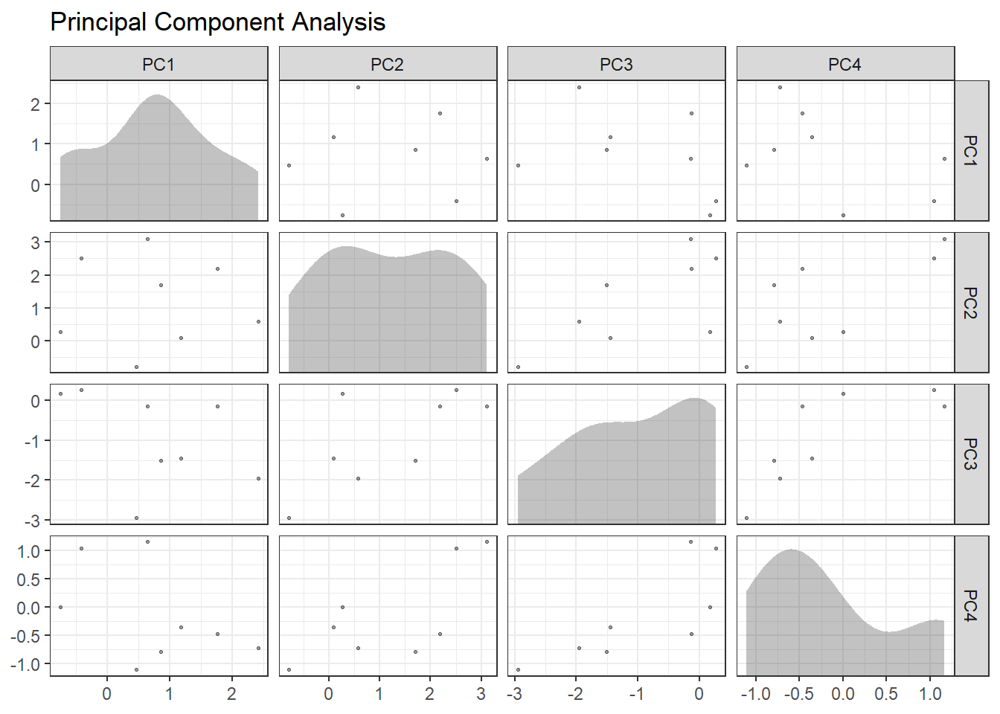
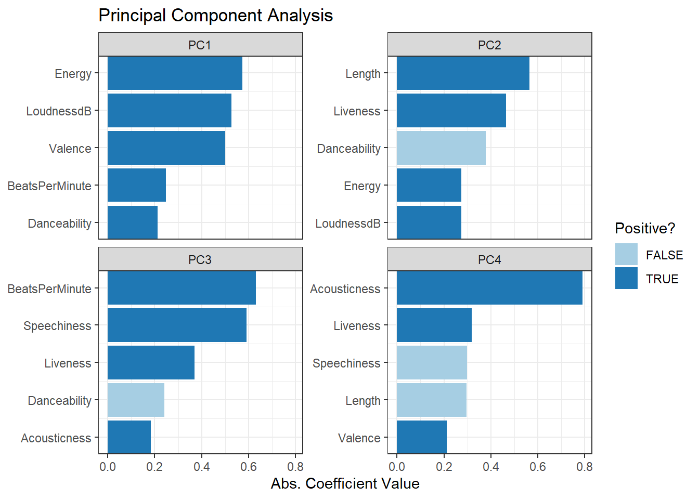
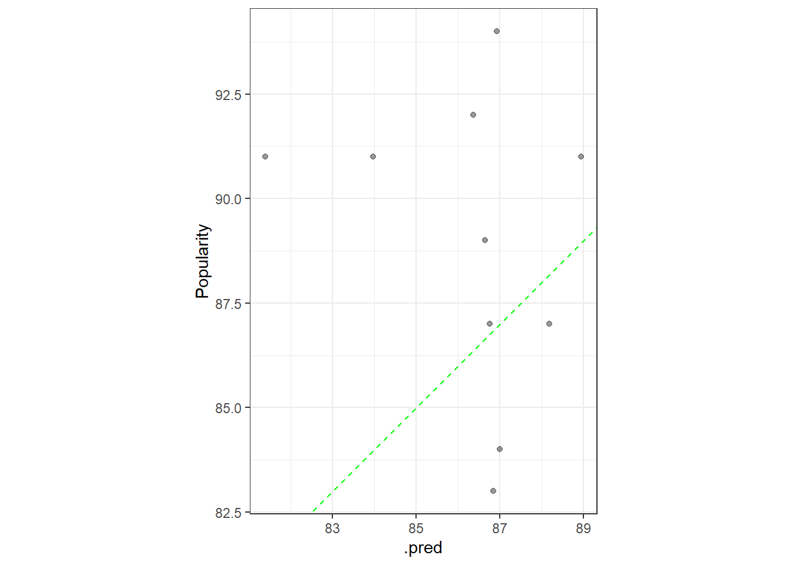

Top 50 Analysis
Last Updated: 14 June, 2022
Executive Summary
Prompt
Prompt:
Perform the following with the attached “top50.csv” file:
- Load the dataset and perform EDA and determine if any cleanup (data
conversions, name changes, scaling, imputation of missing values, etc.)
is needed.
- Determine if any correlation exists between features.
- Visualize and examine the distribution of popularity scores and show
if any outliers or skewing exists.
- Perform any transformations as needed and create a model to predict the popularity of a song, while avoiding overfitting and showing relevant scores.
Goal
Goal:
We want to learn more about the impact of different measures on a song’s popularity, and ideally be able to then use that knowledge to be able to predict what would make a highly popular song
Overview of Data
Load the dataset and perform EDA and determine if any cleanup (data conversions, name changes, scaling, imputation of missing values, etc.) is needed.
Load Data
Review ggpairs for variables
Looks like upon initial review that there are decent correlations between:
- BPM and Speechiness
- Energy and Loudness
- Energy and Valence
- Energy and Acousticness
- Popularity and Valence
I am not sure what “Valence” means, so I would probably want to look this up to understand it a little more as it seems to be coorelated to Popularity (which is what we are trying to model)
Each significance level is associated to a symbol : p-values(0, 0.001, 0.01, 0.05, 0.1, 1) <=> symbols(“”, “”, “”, “.”, ” “)

Review Genre
Looked to see if there are general groups the different genres fall within.
- There are many pop songs as well as multiple pop categories. It’s possible that the category of a song could impact it’s popularity, but that analysis is likely one for a larger dataset.
Coorelation Review
Determine if any correlation exists between features.
Table with the correlations with a p-value < 0.05
Popularity Scores
Visualize and examine the distribution of popularity scores and show if any outliers or skewing exists.
Decided to overlay a violin and a box plot.
- It looks like the popularity scores range from 70 to 95, with the
majority of the scores falling more within the 85 to 92 range.
- Accordingly the two lowest scores of 70 and 78 fall out of the lower quartile, and could be considered outliers in this dataset.

Predict Popularity
Perform any transformations as needed and create a model to predict the popularity of a song, while avoiding overfitting and showing relevant scores.
Build training and test splits
## <Training/Validation/Total>
## <32/8/40>Adjust for coorelations
Knowing that some of the variables are correlated, will then
## Recipe
##
## Inputs:
##
## role #variables
## outcome 1
## predictor 9
##
## Training data contained 32 data points and no missing data.
##
## Operations:
##
## Zero variance filter removed <none> [trained]
## orderNorm transformation on BeatsPerMinute, Energy, Danceability, Loud... [trained]
## Centering and scaling for BeatsPerMinute, Energy, Danceability, Loudnessd... [trained]

Build Model: With Random Forest

Phil Walker
Data Scientist
Greensboro, NC